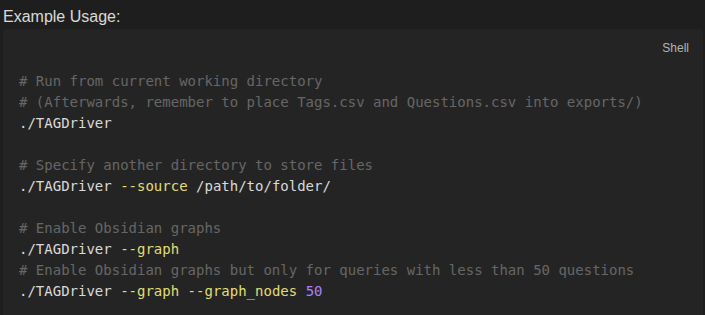
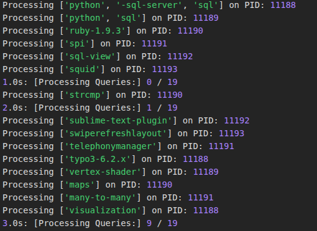
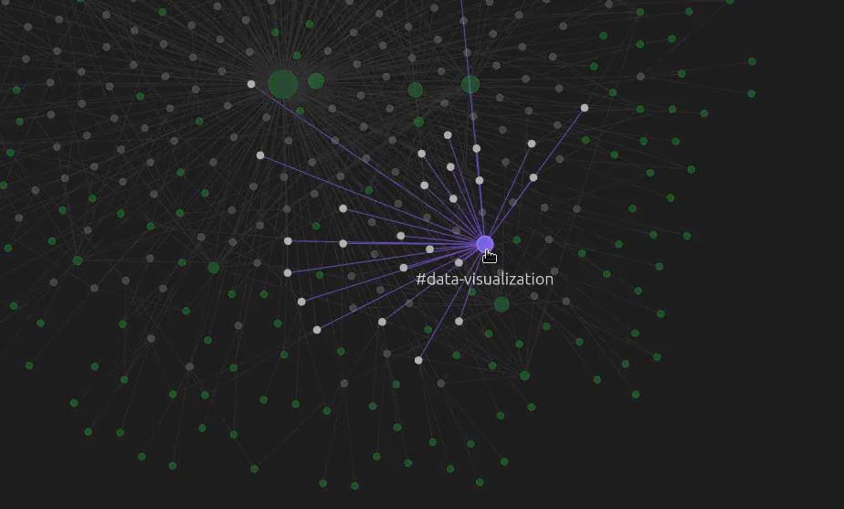
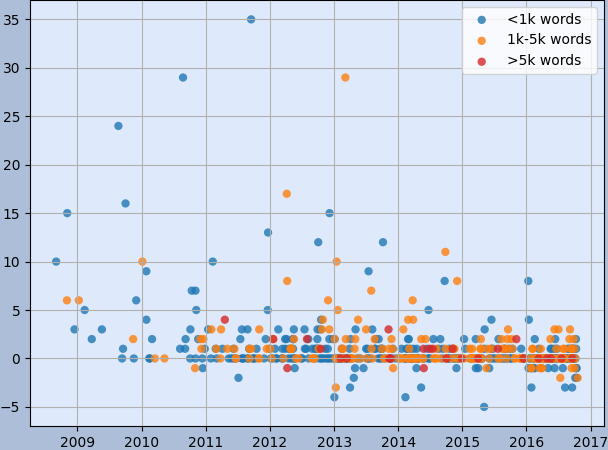
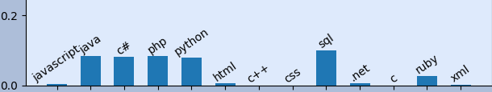
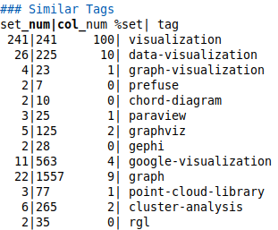

TAG



Overview
TAG is a performant Python/SQLite data processor that facilitates speedy analysis of tag-based data.
This demo version of TAG is designed for a public dataset of several million scraped Stack Overflow questions (availibe here--link)).
Input a list of tags (a query) and TAG will produce text and image files with pre-processed data ready for analysis.
TAG utilizes an inverted index (among other caches) to perform fast lookups and an algorithim based on TF-IDF to quickly find similar tags/queries.
See the public GitHub repository for help setting up and running the program (link).
Obsidian Graph View
- See connections between tags
- Spot regions shared by nearby tags
- Investigate notes of interest
- Utilize Obsidian's search filters

MatPlotLib Charts
See how the query stacks up against frequently-referenced tags with charts!The scatterplot helps visualize the posting frequency of the tag, how those posts are ranked, and any relation between the word count of a post and it's score.
